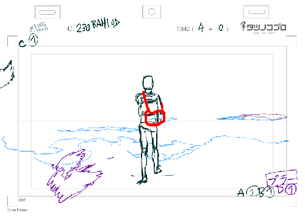
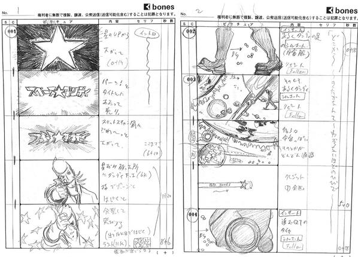
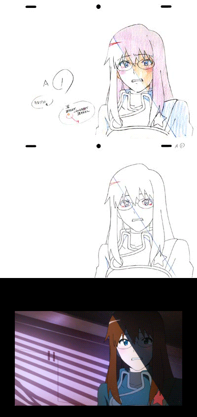

Schițarea modelelor
Pentru a începe procesul de animație, întâi trebuie construite niște modele care
să servească ca și ghid pentru animatori pe tot parcursul muncii lor. Din fericire
majoritatea anime-urilor au ca și sursă cărțile manga, care pe lângă poveste oferă și
majoritatea modelelor necesare. Acestea vor fi de folos pentru schițarea cadrelor animației.


Construcția cadrelor cheie
Pe baza modelelor, directorul de imagine sau animatorii cu experiență vor
desena cadrele cheie ale animației. Acestea au rol de referință și includ
detaliile pentru desenarea cadrelor intermediare de către animatorii începători.
În anumite cazuri însă întreaga animație este realizată de către directorul de
imagine pentru a asigura calitatea imaginii pentru anumite scene.

Animare și finalizare
Pe baza cadrelor intermediare, animatorii trebuie să "umple" cu alte cadre animația
pentru a fluidiza aspectul. Apoi, în special în anime-urile moderne, sunt adăugate
efecte speciale și sunt corectate cadrele pe calculator. După aprobarea directorilor
și animatorilor mai experimentați este adăugată coloana sonoră și tot ce mai e necesar
pentru a putea obține produsul final. În cazul unui serial, această muncă se află constant
sub presiunea timpului datorită termenelor de lansare ale episoadelor.